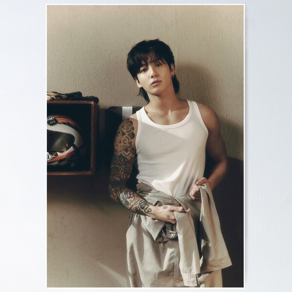
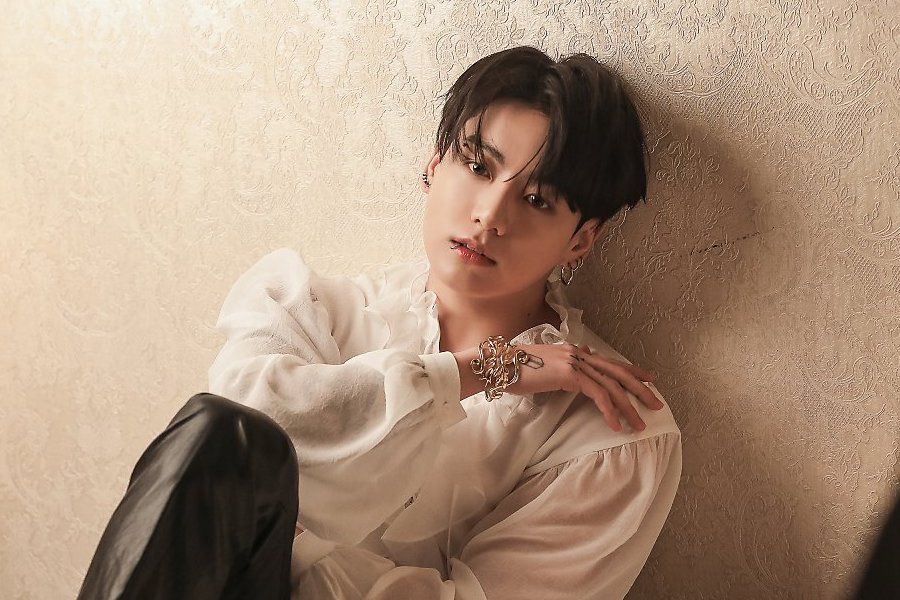

Jeon Jungkook, tem 26 anos, tem 1,79 de altura, tem cabelos pretos, tem olhos pretos, é coreano, tem piercing nos labios, usa brincos, tem tatuagens
no braço.Ele é cantor e dançarino, faz parte do gupo BTS, nasceu na Coreia do Sul, nasceu dia 01 de setembro de 1997, tem um cachorro chamado Bam. Ele
gosta de treinar box, gosta de jogar video game, seu super heroi favorito é o Homem de Ferro, seus apelidos são JK, Golden Maknae, Kookie, coelho,
Seu lema de vida é: "Viver sem paixão é como estar morto", ama editar videos de suas viagens, ele tem uma cicatriz no rosto que foi causada durante
uma briga com seu irmão, Jeon Junghyun, por causa de vídeo game, é chamado de Golden Maknae pelos outros membros do BTS porque é bom em tudo que faz,
sabe desenhar muito bemJungkook tinha 15 anos de idade quando debutou com o BTS.
Algumas de suas músicas solo são: My You, Decalcomania, Euphoria, Still With You, Seven, 3D, Stay Alive, My Time, standing next to you, hate you, yes or
no, please don't change, too sad to dance, shot glass of tears, closer to you, somebody...

